Debug Toolbar Tab
Button |
Name |
Shortcuts |
Description |
|---|---|---|---|
Zoom In |
Menu: Hotkey: i, I, or + |
Zooms in by a factor of 2x. |
|
Zoom Out |
Menu: Hotkey: o, O, or - |
Zooms out by a factor of 2x. |
|
Zoom Full |
Menu: Hotkey: f or F |
Zooms to show the full length of the simulation. |
|
|
Zoom in on Active Cursor |
Menu: Hotkey: c or C |
Zooms in by a factor of 2x, centered on the active cursor. |
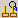 |
Zoom between Cursors |
Zooms in or out to show the range between the last two selected cursors. |
|
Zoom Other Window |
Changes the view in additional instances of the Wave window to match the view of the active Wave window. |
||
Source Annotation |
Menu: |
Allows Debugging with Source Annotation in every open source file. |
|
Source Hyperlinking |
None |
Toggles display of hyperlinks in design source files. |
|
Insert Cursor |
None |
Adds a new cursor to the active Wave window. |
|
Delete Cursor |
Menu: |
Deletes the active cursor. |
|
Find Previous Transition |
Menu: Hotkey: Shift + Tab |
Moves the active cursor to the previous signal value change for the selected signal. |
|
Find Next Transition |
Menu: Hotkey: Tab |
Moves the active cursor to the next signal value change for the selected signal. |
|
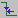 |
Find Previous Falling Edge |
Menu: |
Moves the active cursor to the previous falling edge for the selected signal. |
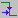 |
Find Next Falling Edge |
Menu: |
Moves the active cursor to the next falling edge for the selected signal. |
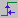 |
Find Previous Rising Edge |
Menu: |
Moves the active cursor to the previous rising edge for the selected signal. |
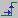 |
Find Next Rising Edge |
Menu: |
Moves the active cursor to the next rising edge for the selected signal. |
|
Select Mode |
Menu: |
Set the left mouse button to select mode and middle mouse button to zoom mode. |
|
Zoom Mode |
Menu: |
Set left mouse button to zoom mode and middle mouse button to pan mode. |
|
Pan Mode |
Menu: |
Set left mouse button to pan mode and middle mouse button to zoom mode. |
|
Two Cursor Mode |
Menu: |
Sets two cursors in Wave window. First cursor moves with LMB, second cursor with MMB. |
|
Stop Drawing |
None |
Halt any drawing currently happening in the window. |
Show Cause |
Command: find drivers ‑active |
Traces a selected wave signal from the current time back to the first sequential element. See Show Cause Button for more information.
|
|
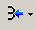 |
Show Drivers Show Drivers (source only) |
None |
Display driver(s) of the selected signal, net, or register in the Dataflow, Schematic and Source windows. Display drivers only in the Source window The source window is not shown if there are no drivers. |
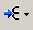 |
Show Readers Show Readers (source only) |
None |
Display reader(s) of the selected signal, net, or register in the Dataflow window. Display drivers only in the Source window The source window is not shown if there are no readers. |
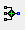 |
Add Contributing Signals |
Menu: |
Creates a group labeled Contributors: <name>, where <name> is the name of the currently selected signal. This group contains the inputs to the process driving <name>. |
|
Expanded Time Off |
Menu: |
turns off the expanded time display (default mode) |
|
Expanded Time Deltas Mode |
Menu: |
displays delta time steps |
|
Expanded Time Events Mode |
Menu: |
displays event time steps |
|
Expand All Time |
Menu: |
expands simulation time over the entire simulation time range, from 0 to current time |
|
Expand Time at Active Cursor |
Menu: |
expands simulation time at the simulation time of the active cursor |
|
Collapse All Time |
Menu: |
collapses simulation time over entire simulation time range |
|
Collapse Time at Active Cursor |
Menu: |
collapses simulation time at the simulation time of the active cursor |
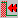 |
Find First Difference |
None |
Find the first difference in a waveform comparison |
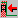 |
Find Previous Annotated Difference |
None |
Find the previous annotated difference in a waveform comparison |
Find Previous Difference |
None |
Find the previous difference in a waveform comparison |
|
Find Next Difference |
None |
Find the next difference in a waveform comparison |
|
Find Next Annotated Difference |
None |
Find the next annotated difference in a waveform comparison |
|
Find Last Difference |
None |
Find the last difference in a waveform comparison |
|
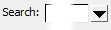 |
Wave Search Box |
Click the box when in transition mode (Falling Edge, Rising Edge, or Any Transition) to cycle through these options. |
Text-entry box for the search string. Dropdown button displays previous search strings. Long search times result in the display of a stop icon you can use to cancel the search. |
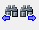 |
Search Previous/Next |
Previous: Shift+Enter Next: enter |
Searches for the next occurrence of the string, either backward or forward in time, from the cursor. |
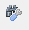 |
Search Options |
Menu: |
Dropdown button to:
|